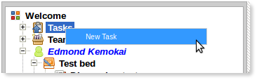
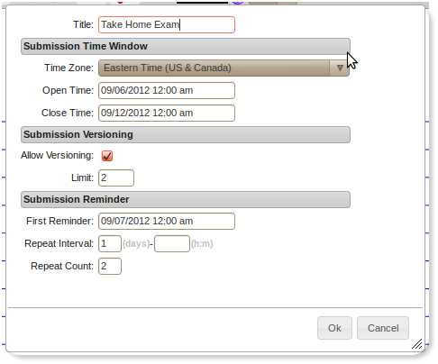
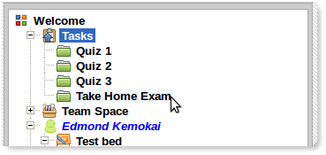
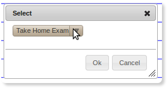
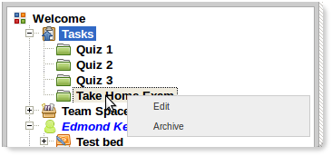
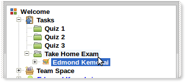

Tasks
Understanding Tasks
Task queues provide a means for group members to submit completed assignments.
Task can be defined by the following settings:
Open Time
This is the time when the task would be open for submissions, prior to this time no submissions can be made to this task.
Close Time
This is the time when the task would be closed to submissions, no submissions can be made after this time.
Time Zone
Time zone against which time is applied.
Allow Versioning
When set, this says that group members can submit multiple versions of a given task. Each submission would be saved separately in the task queue.
Version Limit
A numeric limit on how many times a group member may submit to a task queue. If left blank then no limit is set.
First Reminder
This specifies a time when the first reminder can be sent to group members who haven't submitted
to this task. This would be a time between Open Time and Close Time.
Repeat Interval
If First Reminder is set, this specifies how often to repeat the reminder after
First Reminder.
Repeat Count
If First Reminder is set, and Repeat Interval is set, then this specifies
how many times to repeat reminders after First Reminder. If unspecified with
First Reminder and Repeat Interval set, then Repeat Interval would
run until Close Time.
Create New Task
-
Right-click on the "Tasks" item on the navigation panel to reveal menu options:
 - Select "New Task".
-
Enter task information and click the ok button:
 -
The new task will be created and added to list of Tasks:
 -
Additionally, if the task is open according to the open and close time settings,
then the task would be available to group members for submissions:

Edit Task
-
Right-click on a task in the navigation panel to reveal menu options:
 - Select "Edit".
Archive Task
-
Right-click on a task in the navigation panel to reveal menu options:
- Select "Archive".
Task Submissions
-
Task submissions will appear under the submitted task queue with the group member name:
